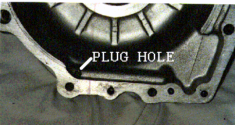

Summary:
This Technical article deals with solving the oil pressure loss on the Norton Commandos with crankcases without a sump drain plug. The pressure loss is due to the engine wet sumping at constant high revs. The wet sumping is caused by a poor oil scavenge design on the 1972 750cc engines and was corrected on the 1973 850cc engines. The fix is to modify the crankcases to scavenge oil correctly. This fix involves splitting the cases, which is the hard part, for the actual fix is quite simple.
History:
In 1972 Norton made some good changes to the crankcases, but blew it when they changed the oil scavenge pickup. Prior to this the oil scavenge was through a sump plug and screen in the back of the crankcase. The Commando engine started out as the Atlas engine and was mounted straight up in the frame. In the Commando the engine is leaned forward, and I guess the engineers at Norton figured that since the existing scavenge pickup was not the lowest part of the crankcase, moving the pickup to the center of the crankcase (the lowest point) would be an improvement. This, however, was not the case, for with the counter clockwise rotation of the flywheel flinging oil to the rear and the lack of a place for oil to pool, at higher RPMs, the oil builds up in the rear of the crankcase and the scavenge pickup cavitates. This causes the engine to wetsump and starve the upper end of oil.
I first encountered this problem with my race bike, which I built from the frame up from a 1972 Combat Commando. I mounted an oil pressure gauge on my bike from day one. I know most knowledgeable Norton riders say never use an oil gauge, for it will give you more problems than warnings; but after my experiences, I will always have a pressure gauge on my bikes. We make a nice oil gauge mounting kit and have several gauges available (see Oil Gauge and Mount for more details). On the track I could watch my oil pressure go from 45psi to 0psi in a couple of laps and then find that all the oil was gone from the tank and was trying to come out of every seal. If I just putted around the pits, or once on a street circuit where I was under 5000RPM most of the time, it worked fine. Without the gauge I surely would have felt all was well and blown my engine. I tried everything I could think of to solve this problem, but slowly narrowed it down to crankcase design. I compared a 1971 crankcase to a 1972 to a 1973, and saw that in 1973 the scavenge pickup was back to the rear of the engine with a place for the oil to pool. I finally found an article by Mick Hemmings in a 1978 Motor Cycle Mechanics Magazine that confirmed my suspicions.
Some people think that this is a Combat engine problem, but in reality it is a problem with any Norton Commando without a sump plug. I think the Combat was bought by riders that were more likely to run the bike harder, therefore this problem reared its ugly head more for the combat riders.
The Fix:
To fix this problem you need to split the cases. Since my engine only had a few miles on it, I just removed the drive side crankcase. You can leave the timing chain, crank, and cam in the timing side. I only removed the oil pump since it may cause pressure on the crank without the crank being supported on the drive side. With the cylinder, pistons, engine bolts and oil pump removed, I placed the engine on wood blocks with the timing side down. I built a puller that would screw into the three inner primary fixing bolt holes and push on the crank to pop the drive side case off.
All you have to do to the timing side case is plug up the oil scavenge hole. This is the hole drilled in the raised passage way in the bottom of the case. In Mick Hemmings article he used Araldite, which is an epoxy compound that he still recommends, so I also used it. I am sure other compounds would work just the same--just make sure they are a proper fit for this application. I prepared the hole by cleaning it and scratching the surfaces for better adhesion.

The drive side needs to be machined out as shown in the following pictures. The idea is to remove the oil scraper flange (shown in the first picture) and machine the case below the oil scavenge hole on the timing side flange (shown in the second picture). I tried to make a place for oil to pool, which I feel will help eliminate cavitation. If you do not want to replace your bearing, you can protect it with tape (on both sides) so the machining process would not contaminate the bearing. We provide this milling service (see Mill Customer's 1972 Drive Side Crank Case for more pictures and details on this service).
The oil scraper flange prior to milling with the outline of the pocket engraved to show the area to be removed.
The finished case with the scraper flange removed.
After completing this fix on my race bike I have good oil pressure the whole race and the oil level doesn't drop in the tank.
Moving the breather:
After talking to several owners that wanted to make this modification or have made this modification, I realized that I needed to add, to this article, the moving of the crank case breather to the timing side case similar to the 850cc breather arrangement. This allows for better breathing and eliminates the possibility of the breather body getting clogged and not working at all.
There are two versions of the 72 crank case that need to be modified: one has a blanking plate on the timing side case and the other is a solid casting. The next two pictures show the breather body located in its new position on the timing side. As you can see the complete breather body is moved. We stock two modified blanking plates if you have the earlier case with the blanking plate, see Commando Crank Case Blanking Plates.
If you have the later case with the solid casting we can modify your case, see Mill Customer's 1972 Timing Side Crank Case.
You should drill two 3/8" holes in the timing side crank case to provide better breathing when you do move the breather manifold. The next two pictures show the placement of the holes. Make sure that you place the holes so they do not pass through the raised webs on the inside of this case.
You will need to cover the hole in the crank case from where you removed the breather body. You can use the breather body for the pattern for the gasket and cover or we make an aluminum blanking plate (see Commando Breather Housing Blanking Plate for 1972).
One last comment: A lot has been written about putting a check valve in the breather line to help eliminate oil leaks. The check valve creates a slight vacuum in the crank case, keeping the oil in the engine. The check valve highly recommended is the power brake check valve (Motormite, part # 80190) costing around $5 at most auto part stores. The following is a picture is of this check valve.
The problem with this valve is it is not straight through and has two different size fittings. Playing around with this valve, I cut it apart to see if I could get it to fit in the breather manifold. The valve has a simple plastic flapper valve assembly, and after removing almost all of the original valve casing, it does fit into the breather with a short piece of rubber hose to space it up so the top section of the breather manifold will screw down and hold the flapper in place. The following picture shows the valve in the breather. Lots of fiddling and some sealant, but the valve is hidden in the breather.
This page was written and designed by F. H. Eaton & Associates if you have any questions or comments please contact us at info@fheaton.com